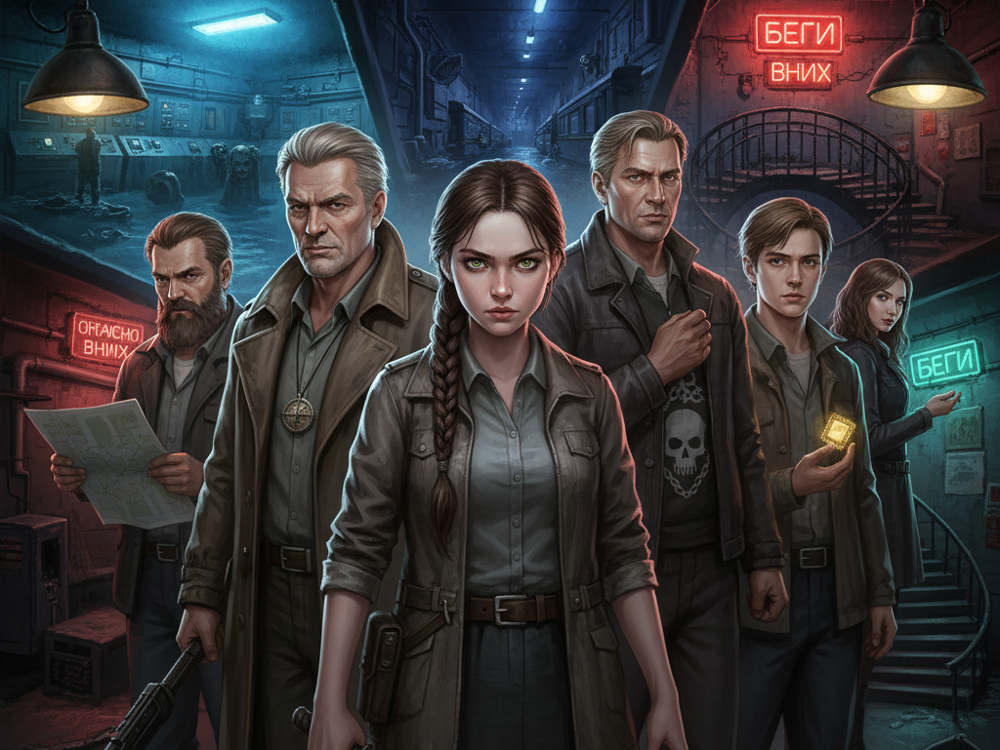

Вас. Жданов
Автор «Василисы и Левиафана».
Жил и обучался современному искусству и прозе в Лондоне.
Читайте мой первый роман-антиутопию про место человека в этом мире. Публикую по главам. Подписывайтесь на обновления. Сердечно благодарен)